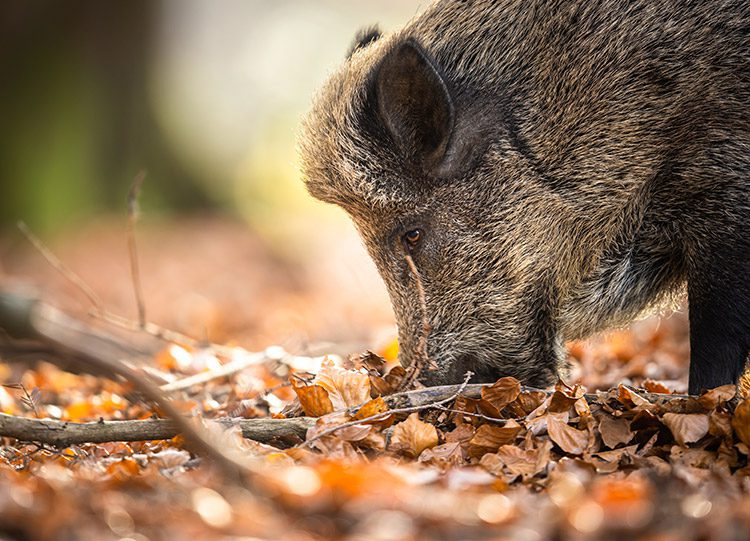

Voir les dates de chasse (site externe)
Consulter les périodes d’ouverture et de fermeture sur le site de référence.

Prototype autonome réalisé avec Silex
Une variation visuelle de l’accueil pour tester l’édition directe des textes, images, liens et blocs.
Accès rapides
Ces cartes démontrent une composition libre dans Silex. Les données métier restent volontairement sur le site Astro.
Consulter les périodes d’ouverture et de fermeture sur le site de référence.
Retrouver les formulaires et imprimés tenus à jour dans les collections Astro.
Voir le téléphone, le courriel, l’adresse et les horaires dans la seconde page du POC.
Ce que le POC prouve
Silex peut produire ce type de page autonome. Il ne modifie pas les composants Astro, les actualités, les fiches espèces ni les formations du site principal.